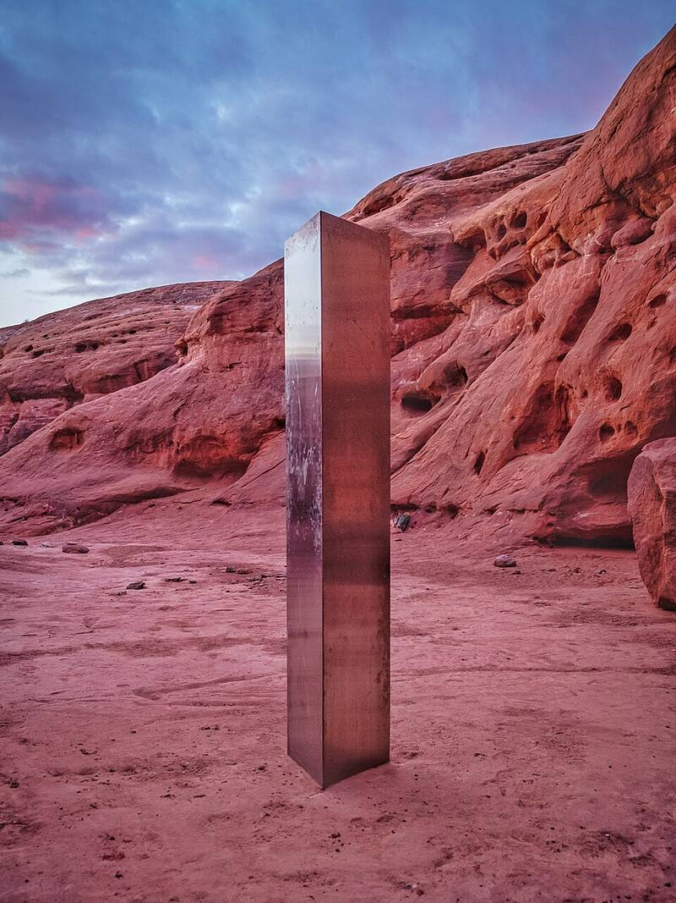

Utah monolith
Lockhart Basin, San Juan County, Utah, 2020

In November 2020, state wildlife officials counting bighorn sheep from a helicopter spotted a metal pillar, made of riveted sheets in a triangular prism, standing in a remote slot canyon. It had been put up unlawfully between July and October 2016 and stood unnoticed for four years. Four Moab residents removed it on November 27, 2020, and more than two hundred copycat pillars appeared around the world. Who made it, and why, remains unknown. 1
Open in the interactive Watcher
Sources
- Utah monolith Wikipedia